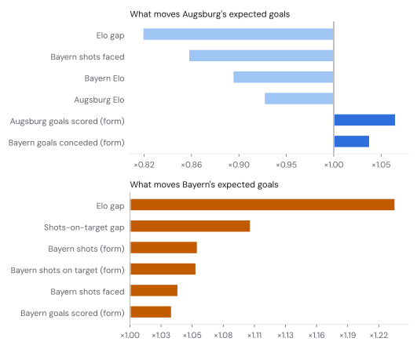
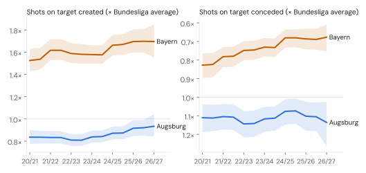
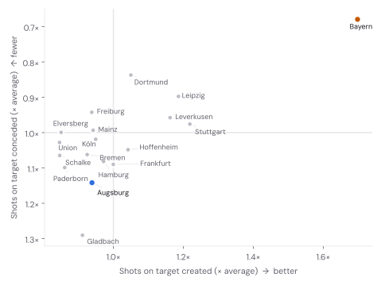
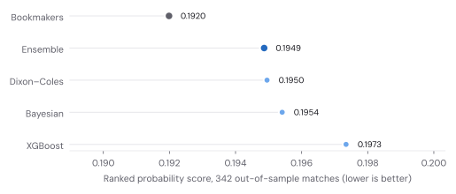
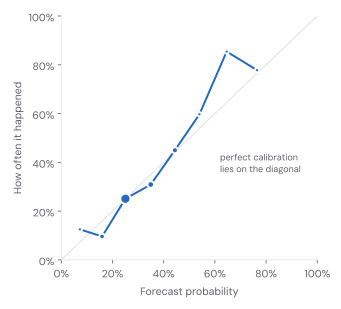
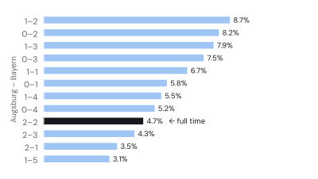

MATCHDAY 5 · FORECAST & FULL-TIME REVIEW
Augsburg vs Bayern: three models, one stubborn underdog.
Augsburg won in Munich in January. The bookmakers have since recovered their composure and price Bayern at 1.17. I built three models to find out who is closer to the truth.
The short version
1.08 – 2.77 Most likely score 1–2 (8.7%) 73% 62%
Bayern should win. The gives them 72%, the 81%. Augsburg get 12% from the models and 8% from the market. 12% is roughly the chance of flipping a coin three times and getting three heads. Unlikely, not absurd: Augsburg pulled off something rarer in January, when they won in Munich as 17.00 outsiders.
The single most likely score is 1–2, but don’t get attached to it: it turns up in fewer than one simulated match in eleven. The more useful summary is the shape: Bayern scoring two or three, Augsburg scoring once or not at all.
Form, after four matchdays
| 2026/27, matchdays 1–4 | Augsburg | Bayern |
|---|---|---|
| Points | 7 | 10 |
| Goals for – against | 11 – 6 | 14 – 2 |
| Shots for – against | 56 – 83 | 87 – 23 |
| Shots on target for – against | 29 – 29 | 35 – 8 |
| Goals per shot on target | 38% | 40% |
Bayern have allowed eight shots on target in four games. Augsburg’s goalkeeper has faced 29. That one line explains most of this forecast.
Augsburg’s attack has been genuinely good: 11 goals, at least two in every game, and wins of 3–0 against Schalke and 4–1 in Frankfurt. But they have been out-shot 83 to 56 and are converting 38% of their shots on target, against a Bundesliga average of 34%. Models treat hot finishing like a heatwave: enjoy it, don’t plan the summer around it.
Three models and an average
1. Dixon–Coles
The of football models (Dixon and Coles, 1997). Every club gets an attack and a defence rating, each team’s goals are a Poisson draw, and a small correction stops the model underrating 0–0 and 1–1. Recent matches count more: a result from a year ago counts half as much as last weekend’s. That half-life was tuned on the 2022/23 season, not on the matches it is judged on.
2. A Bayesian shots-to-goals model
This one . First: how many shots on target will each side create? Second: how many of those go in? Splitting it matters because shots on target are much less noisy than goals. A team can be unlucky in front of goal for a month; it rarely gets out-shot by accident for a month.
Team strengths drift over time, with bigger jumps allowed over the summer when squads change. The model covers the 1. and 2. Bundesliga together, so promoted clubs arrive with a track record instead of a guess. Red cards and the empty-stadium season are accounted for when fitting, so a 10-man defeat doesn’t poison a team’s rating. It is fitted with NUTS, a Markov chain Monte Carlo sampler, giving 1,600 draws from the posterior, so every number comes with its own uncertainty. Here is the core:
# chance creation: shots on target ~ negative binomial
lam_h = exp(alpha + home_adv + att[h, t] - dfn[a, t] + red_eff * (red_a - red_h))
lam_a = exp(alpha + att[a, t] - dfn[h, t] + red_eff * (red_h - red_a))
# finishing: goals | shots on target ~ binomial
p_h = sigmoid(beta + gamma_home + fin[h, s] - keep[a, s])
p_a = sigmoid(beta + fin[a, s] - keep[h, s])
numpyro.sample("hst", dist.NegativeBinomial2(lam_h, phi), obs=sot_home)
numpyro.sample("hg", dist.Binomial(sot_home, probs=p_h), obs=goals_home)
# ...same for the away side. att and dfn move by half-season t,
# fin and keep by season s: all four are random walks.A nice property: thinning a negative binomial with a binomial gives another negative binomial, so the forecast score grid is exact rather than simulated.
For this match the Bayesian model expects Augsburg to manage 3.3 shots on target and Bayern 8.2, with 33% and 36% of them going in.
3. XGBoost
on 30 pre-match features: a home-made , exponentially weighted form in goals, shots and shots on target (for and against), points from the last five, rest days and a promoted-club flag. Two boosters predict each side’s goals. Every feature uses only matches played before kick-off, and each season is predicted by a model trained only on earlier seasons.

How to read this chart
Coloured bars to the right pushed that side’s expected goals up; grey bars to the left pulled them down. ×1.10 means 10% more goals than the model would otherwise expect.
The ensemble
The final forecast is the plain average of the three score grids. I fixed equal weights before looking at any results. That is less clever than optimising the weights, and much harder to fool yourself with.

How to read this chart
Each row is one forecaster and adds up to 100%: blue for an Augsburg win, grey for the draw, orange for Bayern. Compare the Ensemble row, my published forecast, with the Bookmakers row.
All three models are more generous to Augsburg than the market. Part of that is information the models simply don’t have (more on that below); part is that pure results models are cautious by design. They have seen enough heavy favourites stumble to keep some probability in reserve.
The scoreline
How to read this chart
Augsburg’s goals run up the side, Bayern’s along the bottom, and darker cells are likelier. The diagonal (0–0, 1–1, 2–2 …) holds the draws; above it Augsburg win, below it Bayern win.
Bayern win by two or more in 52% of outcomes. Augsburg score at least once in 66%. Augsburg keeping a clean sheet: 7%. Over 2.5 goals: 73%, which suits the fixture. The 15 Bundesliga meetings in Augsburg have averaged 3.4 goals.
How strong are they, really?
The Bayesian model’s latent ratings, re-expressed against the average Bundesliga club of each season. Shaded bands are 80% .

Bayern create about 1.70× as many shots on target as an average Bundesliga side and allow about 0.68× as many. Augsburg’s attack has crept up towards average over three seasons (0.94× now); their defence still allows 1.14× the average, and has gone the wrong way since last season. The band around Augsburg’s 2026/27 numbers is wide: four matches are not much to go on, so the model leans on last season.

How to read this chart
Each dot is a club. Further right means more shots on target created than an average side, higher up means fewer conceded. Top right is where you want to live.
Should you trust it?
Fair question. I the last 342 Bundesliga matches (all of 2025/26 plus this season so far) as if each one were next weekend’s fixture: every model refitted on only what it could have known at the time, then scored with the (RPS), the standard yardstick for win/draw/loss forecasts. Lower is better; a know-nothing model that says one-third for everything scores 0.238.
| Out-of-sample, 342 matches | RPS | Log loss | Top pick correct |
|---|---|---|---|
| Bookmakers | 0.1920 | 0.951 | 54% |
| Ensemble | 0.1949 | 0.964 | 55% |
| Dixon–Coles | 0.1950 | 0.965 | 55% |
| Bayesian | 0.1954 | 0.967 | 54% |
| XGBoost | 0.1973 | 0.969 | 54% |
The ensemble edges each of its parts, narrowly in Dixon–Coles’s case. That is the point of averaging: the models make different mistakes, and some of them cancel out.
The bookmakers are still better, by 0.0029 RPS. The 95% bootstrap interval runs from −0.0013 to +0.0072, so on these matches alone the gap could be luck, but the seasons before point the same way: from 2022/23 to 2024/25 Dixon–Coles trailed the market by 0.0067 a season on average and XGBoost by 0.0074. That is normal and slightly reassuring. Bookmakers price in line-ups, injuries and the opinions of people who bet serious money. A model that only knows results and shots shouldn’t beat them; if it did, I would look for a bug before I looked for a trophy cabinet.
This season, after 36 matches, the ensemble is actually ahead of the bookmakers (0.1991 against 0.2058). I am choosing not to read anything into that. Mostly.
matters more than accuracy for a forecast like this one. When the ensemble says 20%, the thing should happen about one time in five, and through the middle of the range the curve below says it does. One wrinkle matters today: at the top end the ensemble has been too cautious. Across its 76 forecasts of 60% or more, the average forecast was 69% and the outcome happened 82% of the time. That is a small sample, but it nudges the 72% for Bayern towards the bookmakers’ 81%.


How to read this chart
Each dot groups forecasts with similar probabilities. On the diagonal, forecasts meant what they said. Above it, things happened more often than forecast, so the models were too timid.
What the model doesn’t know
- Team news. Pre-match reports list Jamal Musiala as out for Bayern, while Augsburg are without Steve Mounié, Noahkai Banks, Rim Breithaupt and Sima Suso, with Anton Kade doubtful. The models see results and shots, not line-ups. Four absentees against one, if anything, cut further against Augsburg.
- The international break. Both sides last played on 18–19 September. Form numbers come from September.
- January. Augsburg’s 2–1 win in Munich is in the data, but it is one match among thousands. Since Augsburg reached the Bundesliga in 2011 the record reads 23 Bayern wins, 2 draws and 5 Augsburg wins.
Verdict
Bayern win, most likely by two. For Augsburg fans the models offer 12% for a win and 16% for a draw: about 28% that the evening doesn’t end in mild despair. If Augsburg win, I will blame variance. If it finishes 1–2, I will pretend I was sure all along.
Full time: how did the forecast do?
Augsburg 2–2 Bayern. Augsburg scored in the first minute, Bayern levelled on 55 minutes, Augsburg went ahead again on 64 and Bayern equalised on 80. A draw was the ensemble’s 16% outcome; the exact score was its ninth most likely result.

| Forecast | Full time | |
|---|---|---|
| Result | Augsburg 12% · draw 16% · Bayern 72% | Draw |
| Goals | 1.08 – 2.77 expected | 2 – 2 |
| Shots on target | 3.3 – 8.2 expected | 5 – 10 |
| Goals per shot on target | 33% – 36% expected | 40% – 20% |
| Over 2.5 goals | 73% | Yes |
| Both teams score | 62% | Yes |
| Bayern by two or more | 52% | No |
The shot forecast held up better than the score. The Bayesian model expected Bayern to put 8.2 shots on target and they managed 10, from 27 attempts. It expected 3.3 from Augsburg and got 5. The finishing is where it went sideways: Bayern turned 20% of their shots on target into goals against a forecast 36%, while Augsburg kept converting at the hot rate (40%) the model had refused to believe in. Augsburg also scored as many goals in 90 minutes as Bayern had conceded in their first four games combined.
Scored on probabilities rather than on the single most likely score, the models beat the market on this one: ranked probability score 0.267 for the ensemble against 0.331 for the bookmakers (lower is better). XGBoost, the model most generous to Augsburg, did best at 0.240. That is one match. It counts exactly as much as each of the 342 in the backtest, where the bookmakers are still ahead. The calibration wrinkle I flagged, that the ensemble has been too cautious on big favourites, pointed the wrong way today; one match settles nothing either way.
Neither of my prepared excuses fits a 2–2, so I am left with the honest one: a one-in-six outcome happened. The last time Augsburg drew with Bayern in the Bundesliga was October 2019, at the same ground, with the same score.
Run it yourself
The whole pre-match analysis, from data download to the last chart, runs in one notebook. Choose a GPU runtime: the Bayesian model’s chains run on the GPU through JAX, and XGBoost trains with CUDA.
Open the notebook in Google Colab ↗It pins the data to the same snapshot, so you should land within about a percentage point of the numbers here (MCMC is random, and GPUs do arithmetic in a slightly different order).
Data and sources
Results, shots, shots on target and bookmaker odds: football-data.co.uk, via the xgabora/Club-Football-Match-Data GitHub mirror (2005/06 to matchday 1) and football-data.co.uk directly for matchdays 2–4. Results cross-checked against openfootball. Bookmaker price for this match (12.00 / 8.50 / 1.17) and team news from pre-match reports by Starting11 and Khel Now; team news was not used by the models. Method references: Dixon & Coles (1997), Modelling association football scores and inefficiencies in the football betting market; Hoffman & Gelman (2014), The No-U-Turn Sampler. Full-time statistics: Sportradar match centre.